3D目标检测
介绍3D detection的各种模型框架方法等。
背景知识：
- RGB image == 2D；RGB-D image == 2.5D；point cloud == 3D
- Amodal 3D Object Detection：即使部分被遮挡，也要能正确估计出尺寸，而不受遮挡的影响。
- objectness：指代非背景的任何物体，不讨论特定的物体类别。
- LiDAR：激光雷达（更精细）；radar：无线电波雷达（更远）
2D-Driven 3D Object Detection in RGB-D Images
ICCV2017《2D-Driven 3D Object Detection in RGB-D Images》
paper下载：http://openaccess.thecvf.com/content_iccv_2017/html/Lahoud_2D-Driven_3D_Object_ICCV_2017_paper.html
概括
使用RGB-D图像，做detection。借助2D图像中成熟的detection技术，来减少3D中的搜索空间，加速运行速度，同时精度又不会损失很多。
TODO IDEA：将2D detection network换成2D segmentation network是否会更好？
思想
在RGB通道（普通彩图）使用传统的2D detection方法，得到2D bounding box。那么物体所在的位置就被限制在2D bounding box所在的视野范围内（即frustum，截头锥体）。使得搜索空间减少。
实现
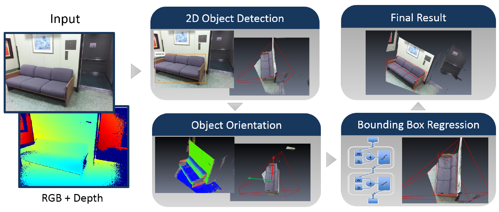
主要流程：
2D object detection：得到frustum，减少搜索空间
object orientation：得到方向
bounding box regression：根据方向，回归出框框的位置和大小
refinement：根据环境信息，优化方框得分
Slit Detection
利用2D目标检测的技术，得到2D bounding box，从而得到frustum
使用Faster R-CNN网络，以VGG-16作为backbone
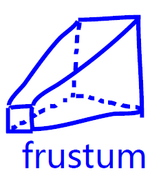
Estimating 3D Object Orientation
出发点：大多数物体都具有“Manhattan frame”，即方方正正的物体结构（若是“non-Manhattan structure”，例如球体，其任意的orientations输出均认为是正确的）。需要使得normals与3个主要的正交方向（三个坐标轴）对齐。并且假设一个frustum内只有一个object、物体放置在水平面上（orientation其中一个轴与floor法向平行）
the Manhattan Frame Estimation (MFE) technique：
旋转矩阵$R$能通过求解下面的优化问题得到：
其中$N$是由每个3D点的normals组成的矩阵，$X$是使得$RN$稀疏的松弛变量。
将normals旋转后，对齐坐标轴，即使得$RN$稀疏。
Bounding Box Regression
以3D points的重心作为原点，3个orientations作为坐标轴方向，建立局部的正交坐标系统。
然后沿着坐标轴（3个都要），然后根据3D points的坐标计算直方图，则直方图能表示点的密度（物体的surface处密度比较大）。然后将直方图输入MLP中进行学习，输出bounding box的位置和大小。
最后粗略计算score，它是score1和score2的线性组合：
- score1：2D detection时的score
- score2：3D point density score（The 3D point density score is computed by training a linear SVM classifier on the 3D point cloud density of the 3D cuboids for all classes）
Refinement Based on Context Information
利用环境信息优化结果，例如一般情况下chairs与table靠近的可能性比较大。
假设labels的分布是Gibbs distribution，然后构造factor graph，使用unary and binary log potential functions得到probability，然后Our goal is to find the labelling that maximizes the aposteriori (MAP)，然后转化为linear program求解。
Amodal Detection of 3D Objects: Inferring 3D Bounding Boxes from 2D Ones in RGB-Depth Images 👍
CVPR2017《Amodal Detection of 3D Objects: Inferring 3D Bounding Boxes from 2D Ones in RGB-Depth Images》
paper下载：http://openaccess.thecvf.com/content_cvpr_2017/html/Deng_Amodal_Detection_of_CVPR_2017_paper.html
概括
本质：将RGB-D图当作普通的图像来处理，使用Fast R-CNN网络（网络中使用的proposal是2D的），只不过网络输出的2D box regression变成了3D box regression。然后使用外部方法将2D proposal转换为3D proposal。最后：final box == 3D proposal + 3D box regression
创新点：
将2D图像的feature应用于3D bounding box的regression上，即不需要将2.5D RGB-D图转化为3D的数据来处理。说明2.5D能编码足够的3D amodal object detection特征。
能直接得到bounding box的位置、大小、朝向（因为将其表示为7维的向量了）
注：
- 2.5D方法：直接在2.5D的RGB-D上学习，将2D的结果转化为3D的结果
- 3D的方法：直接在3D点云上进行学习，从3D window中提取点云特征
- 真实采集RGB-D图像并不是完美的，在Depth上noisy，而且在Depth图可能有“black hole”（或许是红外线反光造成的）。而复原出的point cloud误差大、稀疏、且物体只有一部分的表面有点集。
- 作者还稍微改进/修正了NYUV2数据集
与Fast R-CNN的不同：
- 2D proposal的方法不同
- 本文是RGB图和D图的特征的concat，而Fast R-CNN没有“双路并行”和concat。
- 本文的网络后端是：classification、3D box regression；而Fast R-CNN后端是classification、2D box regression。
- 本文需要将2D proposal转换成3D proposal，才能利用网络输出的“3D box regression”来得到最终的box；而Fast R-CNN直接就是2D proposal + 3D box regression == final box
TODO IDEA：如果网络中使用的是3D proposal而不是2D proposal（下图中的绿色的“云”的部分），那么效果或不会更好？（这样就更加像Fast R-CNN了）；能否用Region Proposal Networks来替代传统的proposal方式，以实现加速？；如何把2D box proposal转换为3D box proposal的过程使用神经网络来处理（转换成只使用神经网络处理的关键或许是如何设计neural network输入和输出的“数据”和“数据排列的结构”，因为中间的过程是个black box）？
思想
先想办法做出3D bounding box的proposals，然后利用2D的特征来regress你的3D proposals。
即：从RGB-D图像提议出一个2D proposal，然后将RGB-D和2D proposal送入网络，网络末端则输出classification和3D regression。然后基于2D proposal提议出3D proposal，再利用3D regression便得到最终的3D bounding box位置。
使用2D proposal竟然可以得到3D regression，表明网络需要从图像中隐式地预估出3D box并且学习得到3D regression。
实现
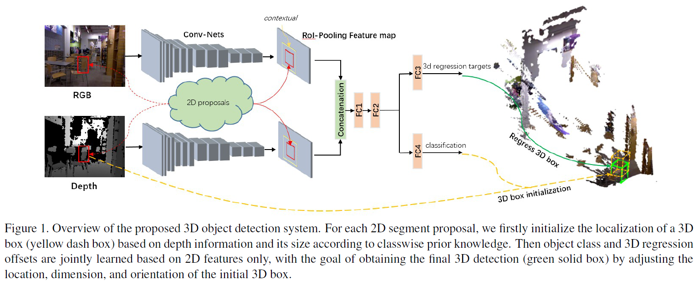
仿照Fast R-CNN的结构和方法。
将RGB图和D图输入到2个VGG16。基于2D object proposals和enlarged contextual patches从RoI pooling layer提取特征，然后将特征cancat，送入后续的multiple tasks learning网络中。
具体细节如下：
2D RoI proposals
使用adapted MCG algorithm算法，来获取proposals（只是可能存在的区域，不一定真的含有物体），可以参考这里：多种region_proposal算法比较
3D box proposals
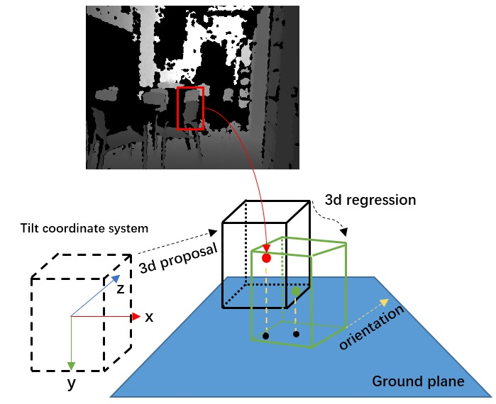
3D box proposals从2D segment proposals中产生。
将3D bounding box表示成7维向量：$[x,y,z,l,w,h,\theta]$（假设放置在水平面上，则方位角只需要一个变量$\theta$），（注：$z$是深度方向）
3D proposals的设定方式：
- 3D box中心点的$x$和$y$：2D segment pixels投影到3D空间中获得
- 3D box中心点的$z$：设置成segment points深度的中值
- 3D box的大小$l,w,h$：设置成该类的平均尺寸（we simply use averaged class-wise box dimensions estimated from training set as base 3D box size.）
- 3D box的方向角$\theta$：设为零
3D box regression
将proposals修正得到最终的box，修正量：$[\delta_x,\delta_y,\delta_z,\delta_l,\delta_w,\delta_h,\delta_\theta]$
训练时，因为有ground-truth boxes，所以可以知道“修正量”的目标值应该是多少。
与Fast R-CNN的方法类似，将feature和box输入到3D box regressor net，从而训练得到“修正量”。
Multi-task Loss
将“物体种类分类”和“方框回归”的损失函数合在一起，得到多任务的Loss
Post processing
在2D detected boxes中使用NMS，在3D中不使用NMS。
对结果不pruning（例如不基于物体数值统计上的尺寸来进行筛选去除结果）。
Mini-batch sampling
主要讲怎么从标记的数据中，采样出包含positive和negative样本的minibatch，详略。
Deep Sliding Shapes for Amodal 3D Object Detection in RGB-D Images 👍
CVPR2016《Deep Sliding Shapes for Amodal 3D Object Detection in RGB-D Images》
概括
仿照Faster R-CNN，提出了3D Region Proposal Network（RPN）和joint Object Recognition Network（ORN）。
其中RPN则利用voxels作为输入，然后输出bounding box（在anchor的基础上学习offset）和objectness score；而ORN则利用voxels和RGB image作为输入，然后输出bounding box offset和class score
特点：box的位置的proposal使用3D方法；RPN具有两个感受野；ORN结合了3D几何结构特征和2D图像特征。
效果：SOTA且更快（与Sliding Shapes相比）
TODO IDEA：能不能将real world的bounding box转化为在depth map上的等效标签？
实现
Encoding 3D Representation（using directional TSDF）
将space划分为等间隔的3d voxel grid，每一个voxel的内容都是一个3维向量$[dx,dy,dz]$。其中$\sqrt{dx^2+dy^2+dz^2}$是这个voxel center到其他points（point on surface）的最近的距离，数值分别沿着坐标轴方向。然后再被$2\delta$ clipped（$\delta$是格子大小）。正负号该voxel center代表在surface的前面还是后面。
Multi-scale 3D Region Proposal Network
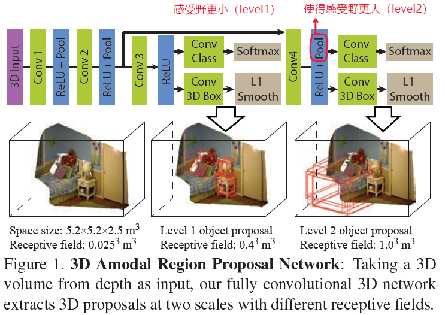
作用：提出区域建议，所以输入是用directional TSDF编码后的voxels；输出的objectness score如果太低则不被采纳；
特点：两个感受野，分别建议出大框框和小框框。
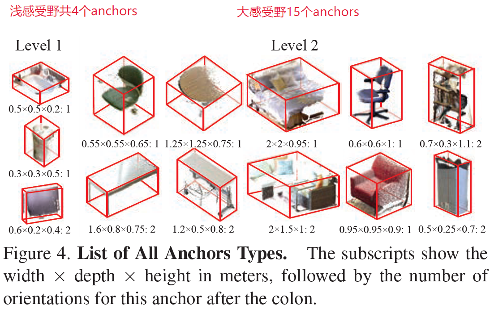
实现细节：
- 使用房间的主方向作为所有proposals的朝向（即使用了Manhattan world assumption）
- 每个voxel上有个feature，anchor有N个。将其送入softmax分支（2N个nodes）则得到N个objectness score；送入L1 smooth分支（6N个nodes）则得到N个bounding box offset（根据anchor和offset就可以计算出理想值为ground truth的proposal，这是第一次回归）
- 感受野更大的是因为有一个pooling，每个位置具有15个anchors；感受野小的每个位置上具有4个anchor；合起来相当于能输出19种不同大小的框框。
- 根据框框内点的密度，移除近似真空的box
- 训练过程：minibatch包含2张图，每张图采样出256个anchors。positive（iou较大）比negative（iou较小）为1比1
- 多任务损失：将softmax和L1 smooth线性结合得到合成的损失函数。
- 使用3D NMS剔除重合度大的多余框框
Joint Amodal Object Recognition Network
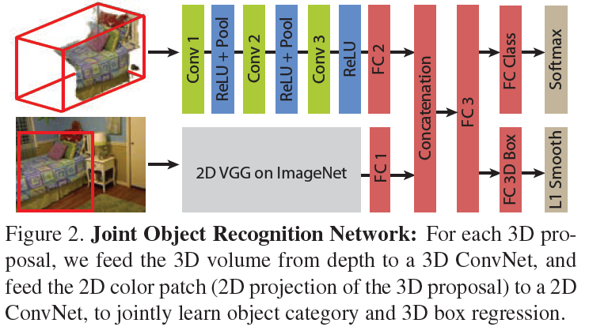
实现细节：
- 将box各个尺度上扩大12.5%，以容纳更多信息。然后截取框内的部分输入到网络中。
- 3D部分（只用了depth map，没有颜色信息）：将box内的space划分成30x30x30的的voxels，然后用directional TSDF编码voxel；2D部分：将box内的3D点投射到2D上，从而获取2D box，然后用预训练的VGG提取feature map，然后用RoI pooling池化到7x7固定尺寸。最后将2D和3D特征concat，预测object label（softmax）和3D box offset（L1 smooth）。
- 训练过程：For each mini-batch, we sample 384 examples from different images, with a positive to negative ratio of 1:3.
- 多任务损失：将softmax和L1 smooth线性结合得到合成的损失函数。
- 使用3D NMS剔除重合度大的多余框框
- 使用Object size pruning技术来降低不合常规的框框的得分（比常规太大或太小则得分除以2）
Deep Continuous Fusion for Multi-Sensor 3D Object Detection
ECCV2018《Deep Continuous Fusion for Multi-Sensor 3D Object Detection》
概括
将雷达（LIDAR，point cloud数据）和前视摄像头（camera image，前视RGB图像）的数据做特征融合。做object detection（在BEV平面视角下的2D detection，或3D detection都支持）。使用端到端的网络结构，多尺度下的特征图融合。效果：显著的SOTA，推理速度快。
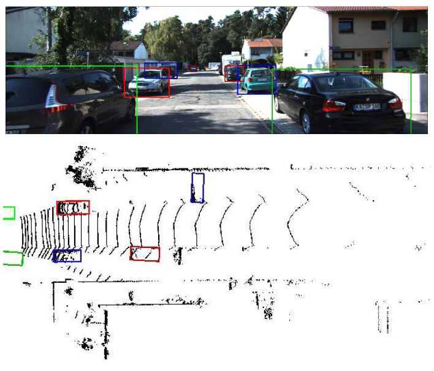
注：
- BEV即Bird’s-Eye-View，即俯视图
- 难点：如何实现point cloud与RGB的特征融合？
- camera image和point cloud都是车辆的前方视角的数据
原理
原理概述：将前视图像的特征图转变为俯视的特征图；将point cloud转变为俯视图；然后两个俯视图相加；再在多层级上融合；然后用与RPN类似的方法提取区域建议，最后得到detection result。
将前视的camera image转变为俯视的BEV的关键原理（continuous fusion layer的功能）：
- 用CNN提取特征得到多层级的camera image feature map，将camera image feature map（下图中的红色“camera image”）的feature利用投影关系“加载”到point cloud中，再将point cloud投影到BEV平面上。给定BEV上的一个target pixel（下图中右边的白色正方形），先用KNN的方法寻找其邻居，然后使用使用类似于“点卷积”的方法聚合信息，从而获取到target pixel应得的特征向量。
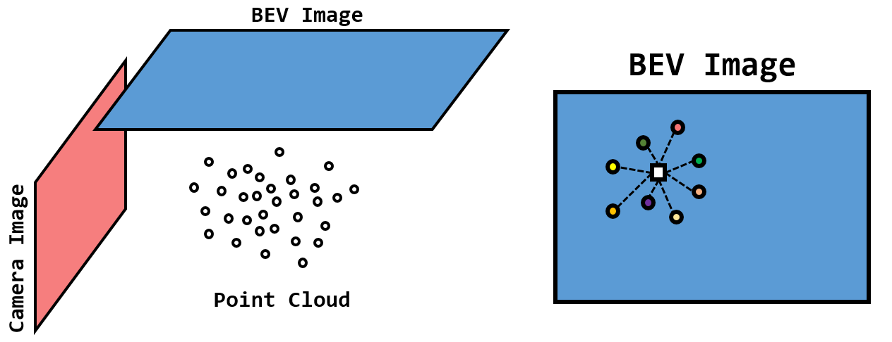
实现
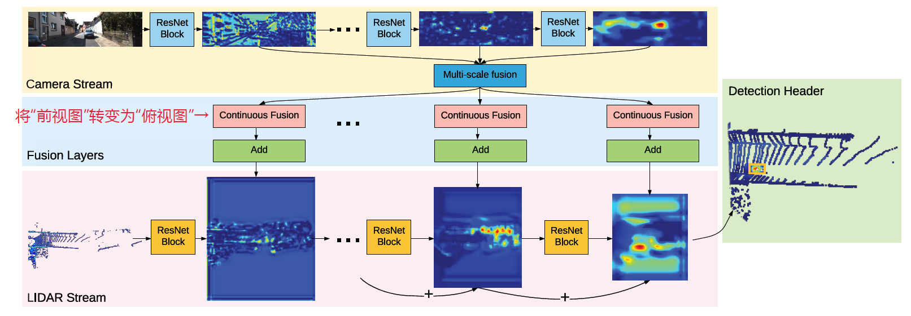
网络的整体架构如上。
- 黄色的camera stream：使用ResNet18提取camera image的多层级的feature map。
- 红色的LIDAR stream：使用ResNet18（不是同一个）提取LIDAR BEV（雷达点云的俯视图）的多层级的feature map
- 蓝色的Fusion Layers：使用continuous fusion layer将前视的feature map转变为俯视的feature map，然后与LIDAR BEV的feature map做融合
- 绿色的detection header：使用类似于Faster R-CNN的方法，用RPN的方法提取区域建议，然后分类识别等等。
Continuous Fusion Layer
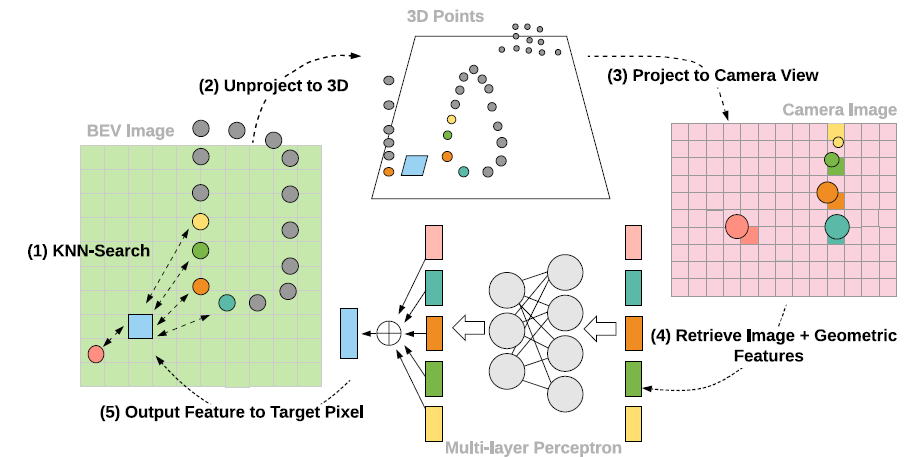
- 如果要求BEV上的一个浅蓝色正方形像素点对应的feature vector，则首先寻找其K个邻居（邻居是点云的俯视图投影的来的）；从而知道这K个邻居在点云中是哪K个点，并且计算在3D点云空间中的相对坐标$x_j-x_i$（$x_j$是邻居，$x_i$是中心点）
- 然后将这K个点投影到前视图（实质上是前视图的feature map），这K个点落在哪个像素上（因为不可能刚好落在像素上，所以实际上是使用双线性插值），就被携带了这个像素所对应的feature vector；这样这K个点就都有各自的feature vector了，第$j$个点的feature vector记作$f_j$
- 然后作者仿照“点卷积”（$h_i=\sum_j MLP(x_i-x_j)\cdot f_j$）的公式，作者提出使用：公式更快更省内存。使用这条公式得到的$h_i$即是浅蓝色正方形得到的feature vector
特点：BEV图上的像素点包含了“点云的局部空间信息”、“前视图的特征信息”，并使用MLP使这两个信息”融合处理”，从而生成BEV图。
Architecture of our model
- 使用ResNet18提取feature map
- continuous fuse layer的输入是对应的image feature map以及所有特征图融合后的输出；特征图之间用逐元素之间的加法加起来
- 随后将得到的feature map使用1x1卷积；用2个anchors；anchor的输出是逐像素的类别置信度以及box的center、location、size、orientation；最后用NMS
- 使用多任务混合损失函数：$L=L_{cls}+\alpha L_{reg}$，即分类和回归任务的混合
Frustum PointNets for 3D Object Detection from RGB-D Data
CVPR2018《Frustum PointNets for 3D Object Detection from RGB-D Data》
paper下载：http://openaccess.thecvf.com/content_cvpr_2018/html/Qi_Frustum_PointNets_for_CVPR_2018_paper.html
概括
将RGB-D转为point cloud，然后使用3d的方法来处理点云数据。整体框架：先用2D detection的方法缩小搜索空间，然后做3D Instance Segmentation剔除杂点，最后Amodal 3D Box Estimation来回归得到框框。
作者声称的优点：efficiency、high recall、precisely estimate 3D bounding boxes even under strong occlusion or with very sparse points、SOTA、having real-time capability
模型名字：Frustum PointNets
原理
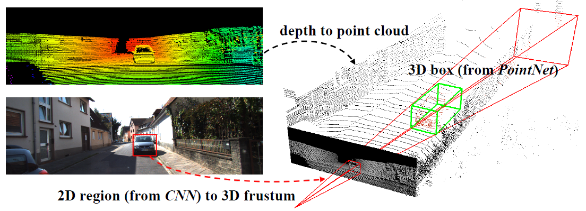
利用2D detection的方法缩小搜素空间（形成frustum）；然后剔除杂点、生成回归框。
生成frustum的优点：efficiently propose possible locations of 3D objects in a 3D space
实现
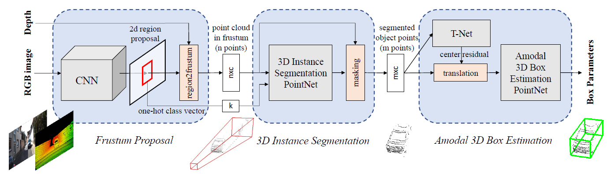
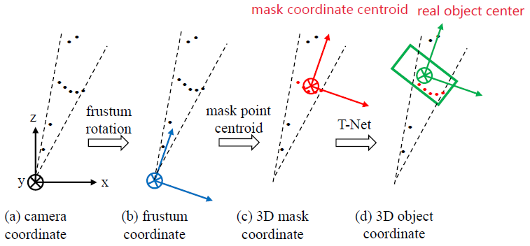
Frustum Proposal
利用2D detection的方法（如FPN），生成2D region proposal（predict amodal 2D boxes），并且分类类别（one-hot class vector）；然后region2frustum模块则根据2D region生成3D frustum；然后转而使用“Coordinate systems for point cloud”图中（b）的坐标系，即其中的一个轴是沿着视线的中央位置的。
3D Instance Segmentation
用二分类来对每个点做segmentation，同时利用2D detector得到的prediction，从而能够判断某个点是否属于目标物体（object of interest）的点；这样就能生成一张mask（掩膜），从而得到比较干净的区域；然后将XYZ坐标减去其重心，得到“Coordinate systems for point cloud”图中（c）的坐标系的样子（注意，我们不缩放点云的坐标）。
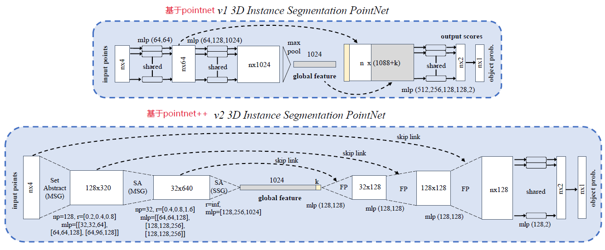
作用：剔除Foreground Occluder（遮挡物）和Background Clutter（背景杂乱），因为depth的区别比较大
前提：Note that each frustum contains exactly one object of interest.
Amodal 3D Box Estimation
先用T-Net（light-weight regression PointNet）来平移点云（回归出center的残差），使得centroid接近amodal box center（real object center）；
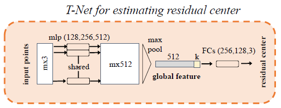
然后用Amodal 3D Box Estimation PointNet来回归出框框（网络输出的结点个数是$3+4\times NS+2\times NH$？？？）
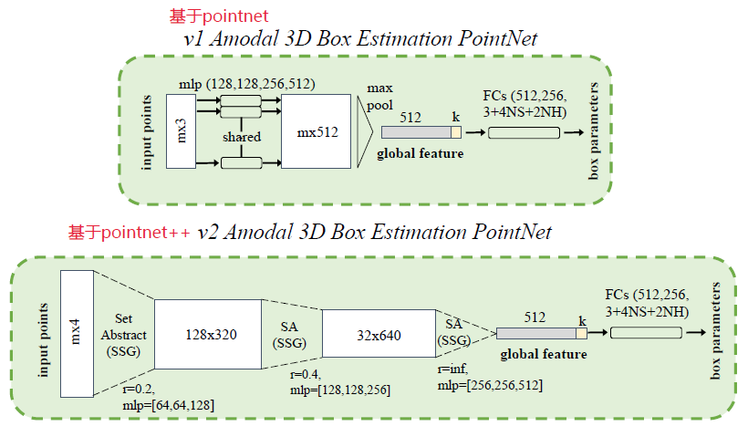
回归框框的量：
- center residual：理想值是T-net之后的中心位置与真实中心的偏差（绝对坐标下的中心 = mask的中心 + “T-NET”学习到的偏移量 + 框框回归得到的偏移量）
- size
- heading angle$ \theta $（along up-axis）
Training
使用multi-task losses（三个网络的混合loss）
提出所谓的“corner loss”，能同时优化框框的center、size、heading，而避免了只优化一个量（本质上corner loss是预测框的8个顶点与ground truth的顶点的距离之和）
Joint 3D Proposal Generation and Object Detection from View Aggregation
IROS2018《Joint 3D Proposal Generation and Object Detection from View Aggregation》
概括
提出了一套无人驾驶中的detection方案叫AVOD（Aggregate View Object Detection network）。
使用“雷达点云数据+RGB图像”作为输入（两种模态所以需要multimodal feature fusion）。仿照Faster R-CNN，AVOD主要由RPN、detector network组成。特征提取操作还是在2D层次上的处理。
优点：
- 可以检测小物体，且high recall（因为使用high resolution feature map（仿照了FPN的做法），以及两个模态融合，所以可以在proposal阶段达到high recall）
- 较精确预测3D box的orientation（因为作者提出了新的box表达方式，称作4 corner encoding）
- SOTA、场景泛化性能好、实时、低内存占用（efficiency是因为proposal之前使用1x1 conv进行了feature map channels number的reduction）
3D box与2D box的区别：3Dbox是3D的，3Dbox还要预测orientation
实现
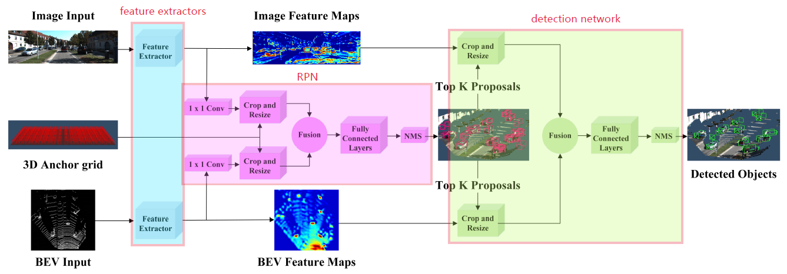
将point cloud数据通过某种基于voxel grid的方法转化成6-channel BEV map，这个BEV就是上图中的“BEV Input”
然后利用下图类似于FPN结构的网络来提取特征，分别得到“Image Feature Maps”和“BEV Feature Maps”（得到的是高分辨率的特征图，有助于识别尺寸小的物体。输出图的尺寸不变，但是通道数可能改变。取最后一层的输出作为特征图）
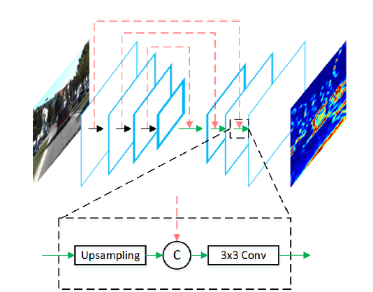
RPN
目的：回归出anchor与GT的偏移量$(\Delta t_x,\Delta t_y,\Delta t_z,\Delta d_x,\Delta d_y,\Delta d_z)$（这里使用的是axis aligned bounding box），以及objectness score（注意这里并没有回归orientation）
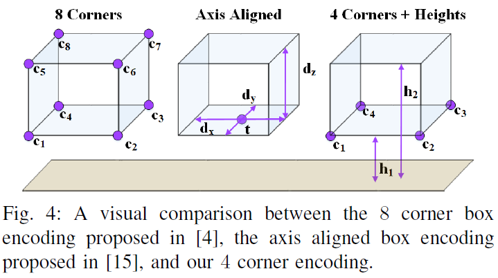
anchor生成方式：centroid是BEV平面上的等间隔采样，中心的高度等于摄像机的高度，size是聚类获得。所以本质上是用2D的anchor表示3D（因为中心点的高度都是一样的）。并且移除空的anchors。暂不考虑orientation，即与坐标轴对齐
crop and resize：将3D anchor投影到BEV或前视图上，得到对应的ROI区域。然后将对应区域crop出来，再resize。从而得到固定尺寸的输入
流程：
- 先1x1卷积将特征图缩小到只有1个通道（减少计算量）
- 然后根据anchors来进行crop and resize，得到“feature crop”
- 将“feature crops”以element-wise mean operation的方式进行融合
- 然后送入FC层，最后再2D NMS（本质是2D的，因为proposals中心点的高度都是一样的）
Detection Network
- 目的：得到最终的detection box
- 输入：将3D proposals投影到BEV、前视图得到的区域，再crop and resize，这样输入尺寸才相同
输出：box regression, orientation estimation, and category classification for each proposal
框框编码：将3D box用“4 corner encoding”方法编码，即4个底角的xy坐标，以及上下面到地板的距离，那么框框的回归量就是$(\Delta x_1,\Delta x_2,\Delta x_3,\Delta x_4,\Delta y_1,\Delta y_2,\Delta y_3,\Delta y_4,\Delta h_1,\Delta h_2)$，回归量是proposal与GT的偏移量。相比前人的8 corner表示法，参数量从24减少到10个。
- Orientation Vector Regression：传统的表示法就是$\theta$。而作者使用$(x_\theta,y_\theta)=(cos(\theta),sin(\theta))$表示orientation。（但是orientation好像已经在“4 corner encoding”暗含了，为什么又要估计方向？？）
- 流程：
- element-wise mean operation进行“feature crops”的融合
- 经过FC层，输出“框框10维回归量”+“方向2维估计量”+“one-hot分类”
- 最后NMS
Multi-View 3D Object Detection Network for Autonomous Driving
CVPR2017《Multi-View 3D Object Detection Network for Autonomous Driving》
paper下载：http://openaccess.thecvf.com/content_cvpr_2017/html/Chen_Multi-View_3D_Object_CVPR_2017_paper.html
概括
使用Multi-View的方式，对“雷达点云+RGB图”的输入，进行特征融合。达到了高精度。将点云转换成图像表达，并且需要将3D proposal投射到2D平面上，所以其实MV3D还是基于2D方法。
方法简述：将稀疏的点云转变成multi-view表示（作者是BEV+FrontView），于是MV3D的输入就是LIDAR BEV + LIDAR FV + RGB Image。然后分别提取特征得到三个feature map。然后在LIDAR BEV的feature map上进行propose得到3D proposals（也用了基于anchor的方法），投影到平面上得到ROI区域，使用ROI pooling得到固定大小的输入，然后用“deep fusion”方法融合特征，最后预测类别和框框的回归量。
其他：
MV3D == Multi-View 3D object detection network
Laser scanners have the advantage of accurate depth information while cameras preserve much more detailed semantic information（所以LIDAR有助于确定框框的位置，RGB有助于确定物体类别）
实现
网络分为两部分：3D Proposal Network（类似于RPN） 和 Region-based Fusion Network（其实类似于ORN）
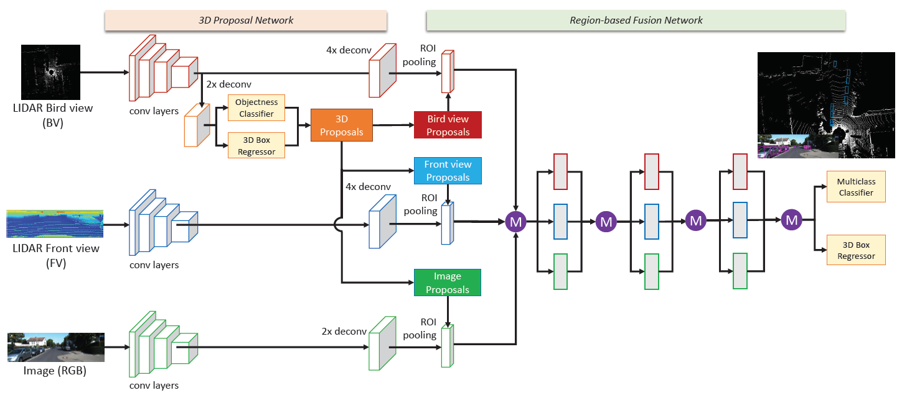
- 数据预处理步骤
将LIDAR point cloud手工提取特征/手工编码得到LIDAR BEV和LIDAR FV
提取点云在BEV视图上的高度特征、密度特征、强度特征，得到Bird’s eye view features，它是6通道的特征图。
提取点云在FV视图上的高度特征、距离特征、强度特征，得到Front view features（FV视图是雷达的横向扫角、雷达的纵向扫角组成的视图。xoy平面是BEV视图）
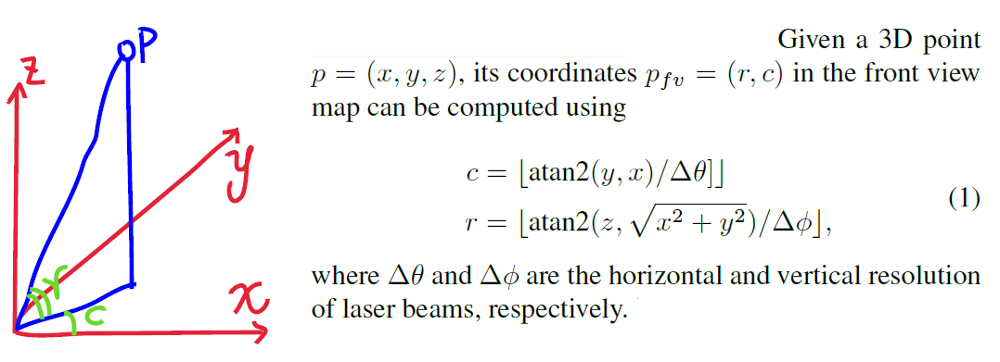
最终得到的MV3D的输入是：
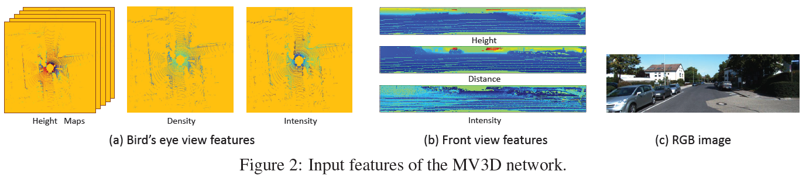
3D Proposal Network
- 使用LIDAR BEV进行框框的propose（优点：保留了框框的物理实际尺寸、避免遮挡、垂直高度方向差异不大）。
- 仿照Faster R-CNN使用基于anchor的方法，3D anchor为$(x,y,z,l,w,h)$，2D anchor为$(x_{BEV},y_{BEV},l_{BEV},w_{BEV})$，3D anchor size（$(l,w,h)$）是聚类获得的，$z$可以根据摄像头高度和$h$计算（假设是物体是放在地面上的），所以实际上是2D anchor。
- 然后使用类似于VGG16的网络来提取特征图。
- 因为BEV视图分辨率不足，识别小物体有困难，所以作者使用bilinear upsampling（图中的deconv）进行上采样增加分辨率。
- 然后3D Proposal Network的输出就是anchor与GT的偏移量、以及objectness score
- 移除空框框，使用multi-task loss，使用NMS，取出top2000进行训练，top300进行推断
Region-based Fusion Network
将3D proposal投影到BEV/FV/RGB平面上得到各自的2D proposal（图中的红蓝绿矩形）
然后根据ROI来crop，再使用ROI pooling，得到固定大小的feature map
再将3个feature map使用“deep fusion”方法来进行特征融合，如下图的（c）。即先算元素均值、再分别用3个FC layers并行处理，再将结果取均值，以此反复。
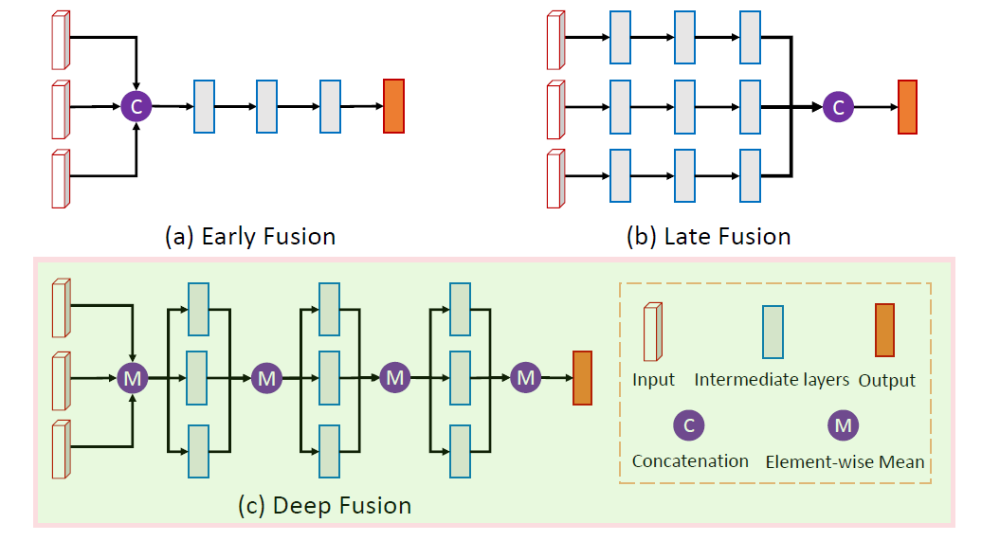
回归量是$t = (\Delta x_0,…,\Delta x_7,\Delta y_0,…,\Delta y_7,\Delta z_0,…,\Delta z_7)$，也就是使用8 corners的坐标来表征bounding box。于是orientation也能从corners中推断出来。输出是回归量$t$和物体类别。使用multi-task loss，使用NMS。
可能是由于“deep fusion”训练困难，我们使用 drop-path training 和 auxiliary losses 的方法来正则化训练，不详述。
VoxelNet: End-to-End Learning for Point Cloud Based 3D Object Detection 👍
CVPR2018《VoxelNet: End-to-End Learning for Point Cloud Based 3D Object Detection》
概括
对单纯雷达点云数据的object detection（所以只有几何信息）。将feature extraction和bounding box prediction的过程整合进一个single stage, end-to-end trainable deep network中，取名叫VoxelNet。关键是voxel feature encoding (VFE) layer的构建，能自动学习有效的有鉴别力的特征。最后通过RPN来输出detection box。达到了新的SOTA。
处理LIDAR点云的难点：点云稀疏、点云密度变化、点云数量比较多（约100k个点）
基本思想：将点云使用voxel栅格化、且在每个voxel内使用“pointnet”，使其转变为4D tensor。接下来使用卷积的方法就可以了。
实现
整体分为3部分：(1) Feature learning network, (2) Convolutional middle layers, and (3) Region proposal network
Feature Learning Network
Voxel Partition：将3D空间等间距分割成很多个voxels
Grouping：在同一个voxel内的点被一起进行后续操作（根据voxel的分割将点云划分分组）
Random Sampling：从点数多于$T$的voxel内采样出$T$个点，使得每个voxel内的点数都不超过$T$（有助于解决点云的密度不均，以及节省计算）
Stacked Voxel Feature Encoding：将VFE layers级联，提取每个voxel的特征
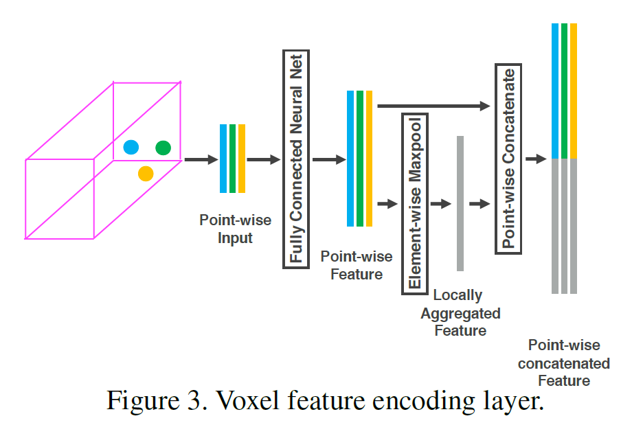
上图是一层VFE layer对一个voxel的操作。图中假设$T=3$（就是采样出蓝、绿、黄三个点）。点$i$的输入特征向量（Point-wise Input）为$(x_i,y_i,z_i,r_i,x_i-v_x,y_i-v_y,z_i-v_z)$，其中$(x_i,y_i,z_i)$是点的坐标、$(r_i)$是雷达接收到的反射强度，$(x_i-v_x,y_i-v_y,z_i-v_z)$是相对重心（重心即所有点的均值）的相对坐标。简言之，有点类似于pointnet中的segmentation的特征操作，好比是一个voxel就是一个pointnet，但是FC layers参数是共享的。
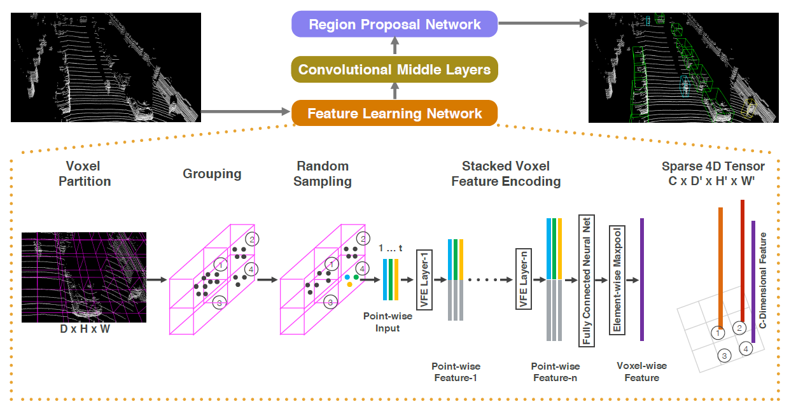
经过n个VFE layers之后就得到了上图中的Point-wise Feature-n，然后输入到FC再MP，就得到了描述该voxel的特征Voxel-wise Feature。
Sparse Tensor Representation：每个voxel都有个特征向量，所以点云可以用4D tensor表示（尺寸$C\times D’\times H’\times W’$，$C$是每个voxel的特征向量长度，$D’$是Z轴方向上的voxels的个数，$H’$是Y轴方向上的voxels个数，$W’$是X轴方向上的voxels个数，xoy平面就是BEV平面）。超过90%的voxel都是空的，后续操作时不必对其进行操作（似乎就是作者提到的Efficient Implementation）。
Convolutional Middle Layers
使用3D卷积对4D tensor进行卷积，并进行reshape到3D tensor。
举例：输入尺寸（4D tensor）是$128\times 10\times 400\times 352$，输出尺寸（经过Convolutional Middle Layers之后）是$64\times 2 \times400 \times 352$，然后reshape到$128 \times 400\times352$变成3D tensor（注意到$400\times 352$正是BEV视图上的栅格尺寸）
目的：
- reshape的目的是方便后续的Region Proposal Network进行2D卷积
- 3D卷积的目的是聚合周围环境voxels的信息
Region Proposal Network
进行2D卷积，最后输出(1) a probability score map and (2) a regression map
虽然是在类似于BEV的视图上进行卷积，但是输出的回归量却是3D的。
回归量是$(\Delta x,\Delta y,\Delta z,\Delta l,\Delta w,\Delta h,\Delta \theta)$。
使用多任务损失：分类的positive/negative损失、位置回归的positive损失。
如下图所示：
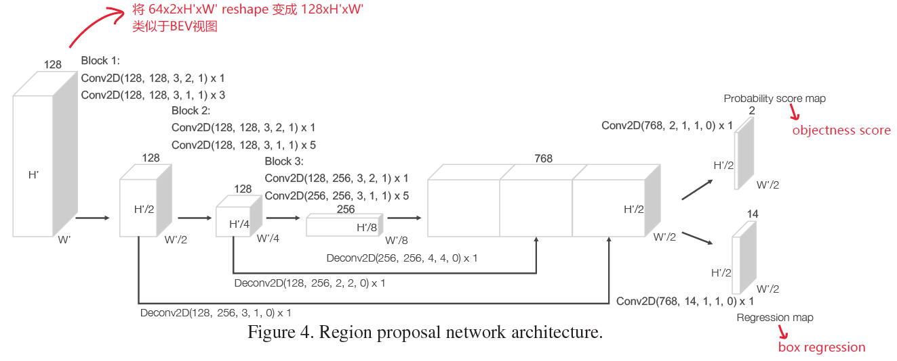
完整结构
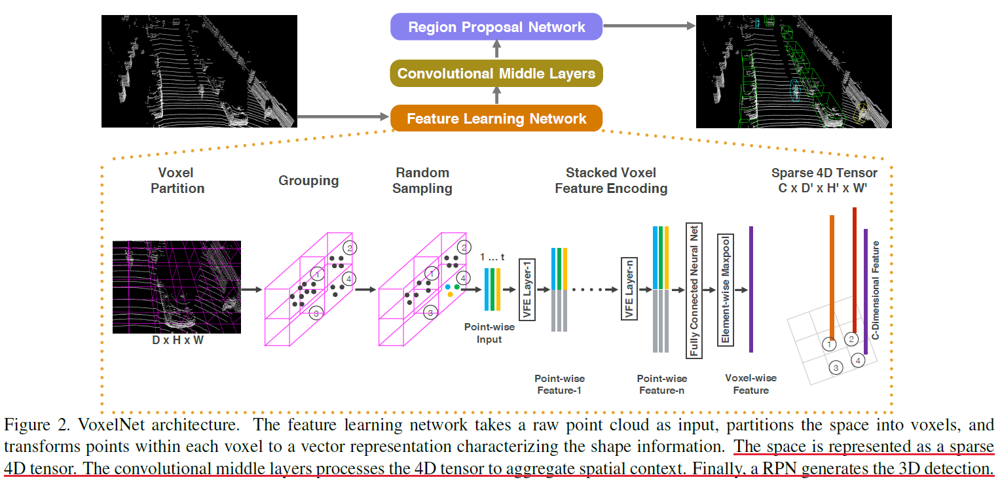